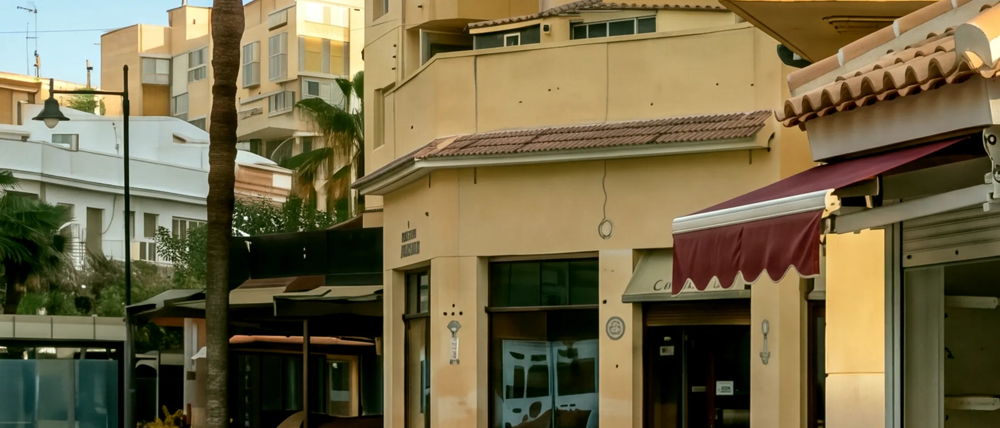

Nikoflor, floristería en el Mercado Municipal de Fuengirola
A las nueve, el quiosco está vacío.
Un quiosco de flores en el Mercado Municipal de Fuengirola que solo abre por las mañanas. Ramos hechos a mano, plantas y encargos por WhatsApp.
Primero salen las cajas.
Sube la persiana. Salen las cajas de madera y el carro de las plantas.
Luego, flor por flor.
Rosas, lilium, claveles y eucalipto, recién llegados.
Después, las plantas.
Ciclámenes, helechos y algún ciprés pequeño, en macetas de barro.
Y, a veces, un color especial.
Hoy, un cubo de rosas azules. Otro día, otro color.
A las nueve y media, ya es Nikoflor.
Sale el sol y abrimos. Hasta las dos y media, de martes a sábado.
A las once, salen los primeros ramos.
Lo que hay en el quiosco
Cambia cada mañana. Pregunta por WhatsApp.
Ramos
- Para regalarDe una docena de rosas a cien, con lo que ha entrado esa mañana.
- De noviaClásicos, en blanco, hechos a mano.
- Colores especialesA veces azules, a veces amarillas: pregunta qué hay ese día.
Plantas
- De interior y de balcónOrquídeas, ciclámenes, helechos y cipreses pequeños.
- JardinerasMontadas desde cero, flor por flor.
Fechas
- San ValentínRosas rojas, y de otro color para quien se atreve.
- NavidadCentros y jarrones de temporada.
De martes a sábado
de 9:30 a 14:30
A las doce, alguien pide otro color.
«Hoy, azules. Mañana, quién sabe.»
A veces hay rosas de colores especiales: azules, amarillas o del tono que pida la ocasión. No siempre las hay, así que pregunta qué tenemos ese día.
Pregunta qué colores hay
A la una, pasan a por su ramo.
No hacemos reparto, pero puedes encargarlo. Escríbenos por WhatsApp para quién es y para cuándo lo quieres, y pasa a recogerlo al quiosco.
Por WhatsApp
- Nos dices para quién es
- y para cuándo
- Lo montamos a mano
- en el quiosco
En el quiosco
- Pasas a recogerlo
- de 9:30 a 14:30
Tu ramo, listode martes a sábado
A las dos y media, cerramos.
De martes a sábado, de 9:30 a 14:30.
Estamos en el Mercado Municipal de Fuengirola, en la avenida Jesús Cautivo. Busca el toldo granate.
- Dónde
- Mercado Municipal, avenida Jesús Cautivo, Fuengirola
Cómo llegar - Cuándo
- De martes a sábado, de 9:30 a 14:30
Domingo y lunes, cerrado - Teléfono
- 687 83 48 14
- Pedidos
- Por WhatsApp, o en el quiosco
Dime para quién es.
Cuéntanos la ocasión, para quién es y para cuándo lo quieres.